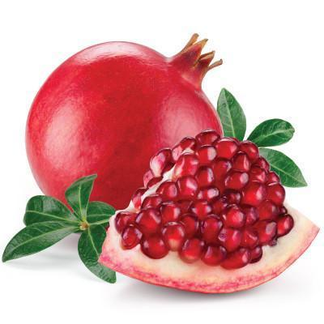

WHAT IS FRUITARIANISM DIET PLAN?
WHY IS IT TRENDING?
Fruitarianism diet plan is a subset of raw veganism where the individual eats either all or mostly fruits (officially, between 50 and 75% which one can calculate by weight) as well as nuts and seeds for extra nutrients. It has been surging in popularity across social media and even Michelle Khare, a badass health and fitness YouTuber with personality, did a Fruitarian challenge for a week back in January of 2018. What is it? Why do people do it? Is it even healthy? Keep reading to find out more about fruitarianism diet plan.
What are the benefits of a fruitarianism diet plan? Benefits of the fruitarian diet include an influx of antioxidants and vitamins which may help combat certain ailments. Overall, following a raw vegan lifestyle may help with heart health, weight loss, and bloating. Famous fruitarians include the late Steve Jobs (who noted that it inspired him), Ashton Kutcher (who was hospitalized), and Mahatma Gandhi (who after 5 years, fell back to vegetarianism).
10 of the Healthiest Fruits for Your Body
Peaches and nectarines: Packed with potassium.Everyone knows that bananas boast high amounts of potassium, but two small peaches or nectarines have more of the essential mineral than one medium banana, boosting nerve and muscle health and making them one of the healthiest fruits. The skins, in particular, are rich in antioxidants and insoluble fibre. And for those watching their weight, peaches are a healthy way to add sweetness to any diet. Bake, broil, or poach them to create pies, cobblers, and other desserts.
Pineapple: Powerful anti-inflammatory. Grilled, frozen, dried, or fresh, this sweet and tangy tropical fruit is jam-packed with bromelain, an anti-inflammatory enzyme that has been shown to reduce the risk of heart attacks and strokes, as well as increase fertility.
Grapes: Heart healthy. As one of the world’s oldest and most abundant healthiest fruits, grapes have been proven to ward off heart disease and high cholesterol, thanks to high levels of the antioxidants quercetin and resveratrol. Each little bulb is also a great source of potassium and iron, which prevent muscle cramps and anemia. Stick with the purple or red kind, as they contain the highest concentration of healthy compounds.

Kiwi: Loaded with vitamins. Beneath its fuzzy skin is a sweet fruit loaded with vitamins C and E, both strong antioxidants that protect against cancer and promote eye health. Kiwis are also low in calories and high in fibre, making them ideal for weight loss. Because they can last up to four weeks when stored in the refrigerator, they are a great snack to keep all year round.
Mangoes: Immunity boosters. Mangoes are becoming increasingly popular among nutritionists due to their exceptionally high levels of beta-carotene, which the body converts into vitamin A to promote bone growth and a healthy immune system. Even more, these exotic treats are packed with more than 50 percent of your daily vitamin C—that’s more than oranges provide.

Apples: Brain- and heart-healthy. One medium apple is low on calories (only 80!) but heavy on quercetin, a powerful antioxidant that protects brain cell degeneration, which can lead to Alzheimer’s disease. Adults who eat apples are less likely to develop high blood pressure, according to one study. Apples can also lower cholesterol and prevent colon cancer, as well as promote healthy teeth and weight loss. Don’t forget to eat the skin, too—it’s especially rich in disease-fighting compounds like flavonoids, which reduce the risk of heart disease.
Blueberries: Anti-aging powerhouses. Long considered one of the beloved “superfoods,” these sweet treats are tiny but mighty, loaded with antioxidants and vitamin C to help fight disease, as well as anthocyanin, a pigment shown to boost brainpower. One study found that people who ate the greatest amount of this fruit were less likely to develop age-related macular degeneration, the leading cause of blindness in older adults.
Grapefruit: Vitamin C powerhouse. Although oranges are a great source of vitamin C, grapefruits pack a bigger punch. Just half of a grapefruit contains nearly 50 percent of your daily vitamin C, as well as high levels of fibre, potassium, and vitamin A. Studies have suggested that grapefruit can alleviate the symptoms of arthritis and repair damaged or oily skin and hair. It’s little wonder that this delicious fruit is no longer just a breakfast staple.
Bananas: Healthy on-the-go snack. A banana is the perfect on-the-go snack, already wrapped and full of potassium and fibre to promote long-lasting energy and keep you alert all day long. And since it contains no fat or salt, bananas are a much healthier snack option than a granola bar or bag of pretzels. Want to make your bananas last longer? Here’s a trick: Store them in the refrigerator after they’re ripe. Although the peel may turn brown, the fruit underneath will stay delicious for three to five extra days.

Pomegranates: More antioxidants than red wine or green tea. Pomegranate juice has two to three times the antioxidant capacity of red wine or green tea, and is also a great source of potassium, which sustains energy and controls high blood pressure. Research shows that drinking ¼ cup of pomegranate juice daily could improve cardiovascular health, lower cholesterol, and help with erectile dysfunction. However, talk to your doctor before you drink regular amounts of pomegranate juice, as it can sometimes negatively interact with prescription drugs. Top salads with pomegranate seeds for a vitamin-packed meal.
A diet fad that's all about eating only raw fruit is blowing up online. There are more than 600 thousand posts on Instagram about the new diet trend called "Fruitarianism." Haven't heard of it? :"The List" is reaching out to Nutritionist Jolene Goring to explain all there is to know about the extreme diet before testing it out.
"THE LIST" is the national Emmy award winning show where pop culture takes a need-to-know twist.